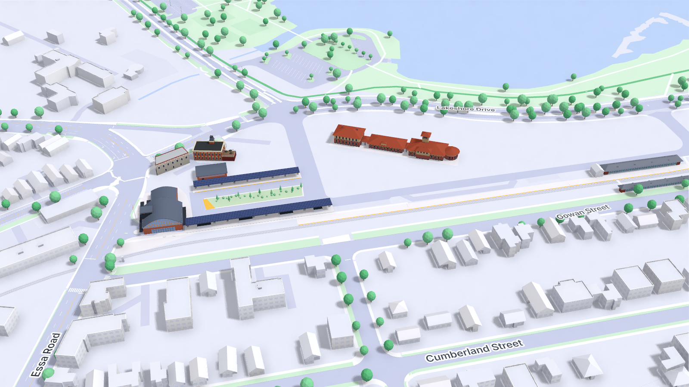

Today (simulator)
Other things I would add
- Platforms 10 and 11 on the north access road (City map, Nov 2025): small bus pads with a pole sign. They are not in the simulator yet. Drawn as item 5.
- Walking routes from Tiffin Street and Lakeshore Drive into the terminal. The City says these sidewalks were still being built. Drawn as item 5.
- Gowan Street tunnel steps (in OSM, about 100 m west of the GO station): a small glass head so people can see the link from Gowan Street to the platforms. Drawn as item 5.
- Trees on the new lawns, in loose groups, so the 3D view reads as a finished site and not an empty lot. The Gowan strip has no room for trees between the stalls and the tracks.
- Later: bike parking beside the terminal (on the City map) and a GO platform shelter at Platform 1.
To check before building it in the simulator
- The loop-side building (OSM 1442477381) has no tags, so its use is not known. It is drawn in the terminal's materials.
- Gowan parking layout. The aerial shows one row of cars along the tracks. The space count is an estimate at 2.75 m per stall.
- Drop-off layout. The City map places "Passenger Drop Off" at the east end, beside Platform 1. The bay layout here is a proposal.